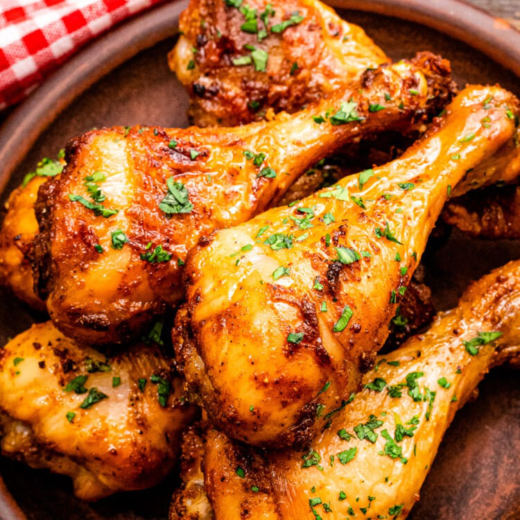

Spicy Hot Chicken Legs

Crispy oven Baked Chicken Wings are so easy to prepare and you
don’t have to bother with all the grease from frying! A healthier yet delicious way to enjoy wings!
Ingredients
- 12 chicken drumsticks
- 1 (5 ounce) bottle hot red pepper sauce
- ¼ cup butter, cubed
- ½ teaspoon garlic powder
- ½ teaspoon onion powder
- salt and pepper to taste
- 1 ½ cups blue cheese salad dressing
Steps
- Place drumsticks in a slow cooker, and sprinkle evenly with pieces of butter.
Pour hot sauce over the chicken,
then season with garlic powder, onion powder, salt, and pepper.
- Cover, and cook on High for 3 hours, or until tender.
Serve chicken legs with blue cheese dressing on the side.